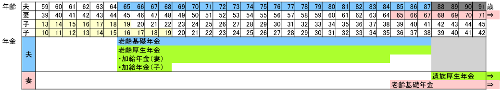
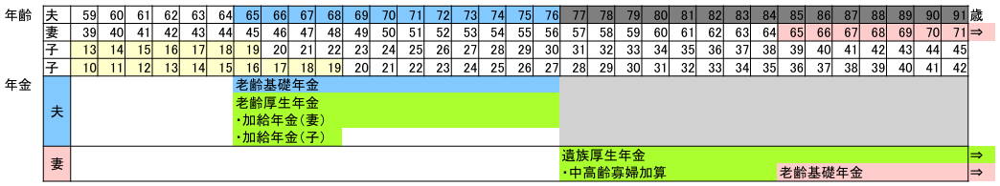
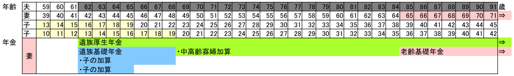
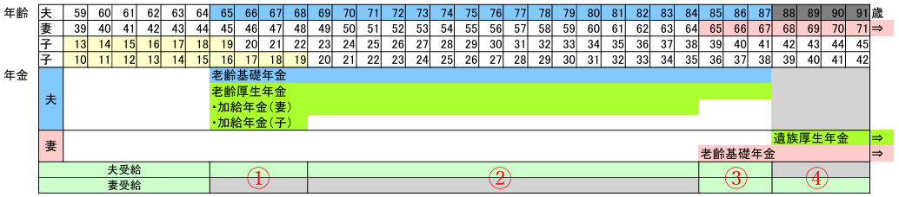
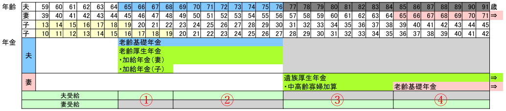
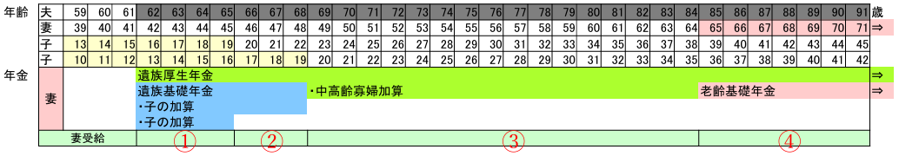

年金
以下の条件を満たす家庭の年金を整理する。- 会社員の夫と専業主婦の妻と子供で構成され、夫が妻より先に亡くなる。
- 夫は会社員として25年以上保険料を納付している（老齢厚生年金受給権者である）。
- 障害認定者はいない。
- 夫と妻の年金受給開始は65歳。
家族状況と受給年金の種類
家族状況に応じた受給年金の種類を整理する。妻65歳（年金受給開始）以降に夫が亡くなる場合
- 老齢基礎年金と老齢厚生年金は、65歳から亡くなるまで受給できる。申請が必要（65歳誕生日前日以降）。
- 老齢基礎年金と老齢厚生年金は、それぞれ受給開始年齢を前後にずらすことができる（すらした場合の話は省略）。
- 加給年金は、65歳未満の妻や子がいる場合に、老齢厚生年金に定額が加算される形で受給する。申請が必要。
- 遺族厚生年金は、老齢厚生年金受給権者の夫が亡くなった場合に、妻（または子）が翌月分から受給できる。申請が必要。
- 子は、高校卒業する3月（18歳到達年度末日）までの子供を指す。
妻65歳（年金受給開始）より前に夫が亡くなる場合
- 老齢基礎年金と老齢厚生年金は、65歳から亡くなるまで受給できる。それぞれ受給開始年齢を前後にずらすことができる。申請が必要。
- 加給年金は、65歳未満の妻や子がいる場合に、老齢厚生年金に定額が加算される形で受給する。申請が必要。
- 遺族厚生年金は、老齢厚生年金受給権者の夫が亡くなった場合に、妻（または子）が翌月分から受給できる。申請が必要。
- 中高齢寡婦加算は、夫が亡くなった時に40歳～65歳で同一家計の子がいない妻が、遺族厚生年金に定額が加算される形で受給する。
- 子は、高校卒業する3月（18歳到達年度末日）までの子供を指す。
子供が高校卒業前に夫が亡くなる場合
- 遺族基礎年金は、老齢厚生年金受給権者の夫が亡くなった場合に、同一生計の子のある妻（または子）が翌月分から受給できる。申請が必要。
- 遺族厚生年金は、老齢厚生年金受給権者の夫が亡くなった場合に、妻（または子）が翌月分から受給できる。申請が必要。
- 中高齢寡婦加算は、夫が亡くなった時に40歳～65歳で同一家計の子がいない妻が、遺族厚生年金に定額が加算される形で受給する。
- 子は、高校卒業する3月（18歳到達年度末日）までの子供を指す。
- 遺族基礎年金と遺族厚生年金は合わせて受給できる。
受給年金額の算出
以下の前提で受給年金額を算出する。- 保険料納付期間をできるかぎり長くすることで、受給年金額を増やして長生きリスクに備える。
- 付加保険料は最大限納付する（月400円の付加保険料で受給年金額を増やせる）。
- 夫と妻の年金受給開始は65歳。
算出に必要となる規定値
規定値ファイルを[ファイルの選択]ボタンから指定または上の領域にドラッグ＆ドロップしてください。
規定値リストを上の領域にコピー＆ペーストまたは直接入力することもできます。
作成した規定値リストをダウンロードできます。 →
規定値リストを上の領域にコピー＆ペーストまたは直接入力することもできます。
作成した規定値リストをダウンロードできます。 →
強調数値は改定される可能性がある値
（2024年時点の規定値）
算出
老齢基礎年金（夫＋妻）
- 老齢基礎年金の年金額は、保険料を40年間（20～60歳の480ヶ月）納付した場合は老齢基礎年金満額円で、各人の保険料納付期間に比例した年金額になる。
- 老齢基礎年金額 ＝ 老齢基礎年金満額円 × 年金保険料納付月数 / 480
- 保険料納付期間が480ヶ月（40年）未満の場合は、60～65歳（5年）の間に国民年金に任意加入して、保険料納付期間を最大の40年に近づけることができる。
- 夫60歳前月時点の保険料納付期間が419ヶ月（1990年4月～2025年2月）の場合、 最大の60ヶ月（5年）任意加入すると年金保険料納付月数がヶ月となり、追加支払い分は円 （国民年金保険料月額円 × 60ヶ月）で、 受給する老齢基礎年金額が円 （老齢基礎年金満額円 × 60ヶ月 / 480） 増える。 10年（65～75歳）以上受給すれば＋（得）になるため、資産的に余裕があるなら任意加入して長生きリスクに備えた方が良い。
- 妻60歳前月時点の保険料納付期間が440ヶ月（2009年3月～2045年10月）の場合、 40ヶ月（3年4カ月）任意加入すると年金保険料納付月数が最大のヶ月となり、追加支払い分は円 （国民年金保険料月額円 × 40ヶ月）になり、 受給する老齢基礎年金額が円 （老齢基礎年金満額円 × 40ヶ月 / 480） 増える。 10年（65～75歳）以上受給すれば＋（得）になるため、資産的に余裕があるなら任意加入して長生きリスクに備えた方が良い。
- 国民年金支払い時に付加保険料（月円）を納めると、円×付加保険料納付月数が、老齢基礎年金に上乗せされる。
- 付加保険料を円（円×12ヶ月）納付すると、毎年円（円×12ヶ月）が上乗せされる。 2年（65～67歳）以上受給すれば＋（得）になるため、付加保険料は最大限納付すべきである。
- 夫の付加保険料納付月数がヶ月（2024年7月～2030年2月）の場合、 付加保険料円（円 × ヶ月）納付で、 毎年円（円×ヶ月）が上乗せされる。
- 妻の付加保険料納付月数がヶ月（2024年7月～2045年10月）の場合、 付加保険料円（円 × ヶ月）納付で、 毎年円（円×ヶ月）が上乗せされる。
- 夫が最大限任意加入＆付加保険料納付した場合の老齢基礎年金額は、円（老齢基礎年金満額円 × 年金保険料納付月数ヶ月 / 480＋付加年金円）。
- 妻が最大限任意加入＆付加保険料納付した場合の老齢基礎年金額は、円（老齢基礎年金満額円 × 年金保険料納付月数ヶ月 / 480＋付加年金円）。
老齢厚生年金（夫）
- 老齢厚生年金の年金額（2024年10月年金事務所計算）は、円
（報酬比例部分円＋経過的加算411円）。
- 老齢厚生年金の年金額は、厚生年金加入時（会社員期間）の報酬額に応じて計算される。計算式が複雑なので省略するが、年金事務所で計算してもらえる。
- 65歳未満の妻がいる場合は、老齢厚生年金に加算される形で加給年金円を受給できる。
- 加給年金円 ＋ 配偶者特別加算円 ⇒ 円。
- 子がいる場合は、老齢厚生年金に加算される形で加給年金円を受給できる。
遺族厚生年金（妻）
- 遺族厚生年金の年金額は、夫の老齢厚生年金の報酬比例部分円の4分の3で、円。
- 中高齢寡婦加算の年金額は、円。
遺族基礎年金（妻）
- 子のある妻が受け取る場合の年金額は、円＋円×子の数。
- 子が1人または2人の時の計算式（3人目以降の子は加算額が異なるが省略）。
- 子2人が受け取る場合（妻がいない場合）の年金額は、円（円＋円）/ 2人。
- 子1人が受け取る場合（妻がいない場合）の年金額は、円。
国民年金納付額
- 国民年金保険料は月円。付加保険料は月円。
- 月々の保険料納付額は円（＋）。年間で円。
- 夫＋妻の国民年金納付額は年間で円。
家族状況と受給年金額
家族状況に応じた年単位の受給年金額を算出する。 厳密には家族状況が変化する年は月単位で算出する必要がある。 年金受給開始は65歳誕生月翌月、子は18歳年度末（高校卒業3月）迄、遺族年金受給開始は死亡月翌月。妻65歳（年金受給開始）以降に夫が亡くなる場合
- ① 円 （夫が年金を受給して65歳未満の妻と子がいる状況）
- （夫受給）夫老齢基礎年金円 ＋ 老齢厚生年金円 ＋ 加給年金（妻）円 ＋ 加給年金（子）円
- ② 円 （夫が年金を受給して65歳未満の妻がいる状況）
- （夫受給）夫老齢基礎年金円 ＋ 老齢厚生年金円 ＋ 加給年金（妻）円
- ③ 円 （夫と妻が年金を受給している状況）
- （夫受給）夫老齢基礎年金円 ＋ 老齢厚生年金円
- （妻受給）妻老齢基礎年金円
- ④ 円 （夫が亡くなり、妻が年金を受給している状況）
- （妻受給）遺族厚生年金円 ＋ 妻老齢基礎年金円
妻65歳（年金受給開始）より前に夫が亡くなる場合
- ① 円 （夫が年金を受給して65歳未満の妻と子がいる状況）
- （夫受給）夫老齢基礎年金円 ＋ 老齢厚生年金円 ＋ 加給年金（妻）円 ＋ 加給年金（子）円
- ② 円 （夫が年金を受給して65歳未満の妻がいる状況）
- （夫受給）夫老齢基礎年金円 ＋ 老齢厚生年金円 ＋ 加給年金（妻）円
- ③ 円 （夫が亡くなり、妻が65歳未満の状況）
- （妻受給）遺族厚生年金円 ＋ 中高齢寡婦加算円
- ④ 円 （夫が亡くなり、妻が年金を受給している状況）
- （妻受給）遺族厚生年金円 ＋ 妻老齢基礎年金円
子供が高校卒業前に夫が亡くなる場合
- ① 円 （夫が亡くなり、子が2人いる状況）
- （妻受給）遺族厚生年金円 ＋ 遺族基礎年金円 ＋ 子の加算円 ＋ 子の加算円
- ② 円 （夫が亡くなり、子が1人いる状況）
- （妻受給）遺族厚生年金円 ＋ 遺族基礎年金円 ＋ 子の加算円
- ③ 円 （夫が亡くなり、妻が65歳未満の状況）
- （妻受給）遺族厚生年金円 ＋ 中高齢寡婦加算円
- ④ 円 （夫が亡くなり、妻が年金を受給している状況）
- （妻受給）遺族厚生年金円 ＋ 妻老齢基礎年金円